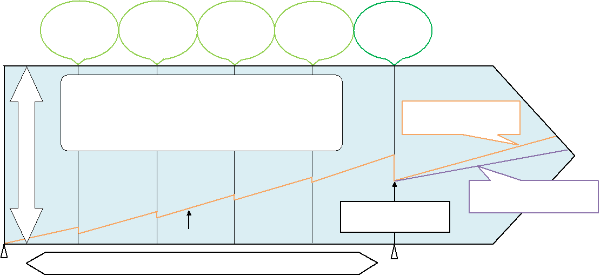

<style type="text/css">
#shikumi .shikumi-chart {
    position: relative;
}
#shikumi .shikumi-chart .word{
    position: absolute;
}
#shikumi .shikumi-chart .word.w1{
    top: 5px;
    left: 70px;
}
#shikumi .shikumi-chart .word.w2{
    top: 5px;
    left: 185px;
}
#shikumi .shikumi-chart .word.w3{
    top: 5px;
    left: 300px;
}
#shikumi .shikumi-chart .word.w4{
    top: 5px;
    left: 415px;
}
#shikumi .shikumi-chart .word.w5{
    top: 5px;
    left: 530px;
}
</style>
<section class="tab-pane fade" id="shikumi">
    <div class="shikumi-chart">
        
        <div class="word w1">word1</div>
        <div class="word w2">word2</div>
        <div class="word w3">word3</div>
        <div class="word w4">word4</div>
        <div class="word w5">word5</div>
        <div class="word w6">word6</div>
        <div class="word w7">word7</div>
        <div class="word w8">word8</div>
        <div class="word w9">word9</div>
        <div class="word w10">word10</div>
        <div class="word w11">word11</div>
    </div>
</section>

    